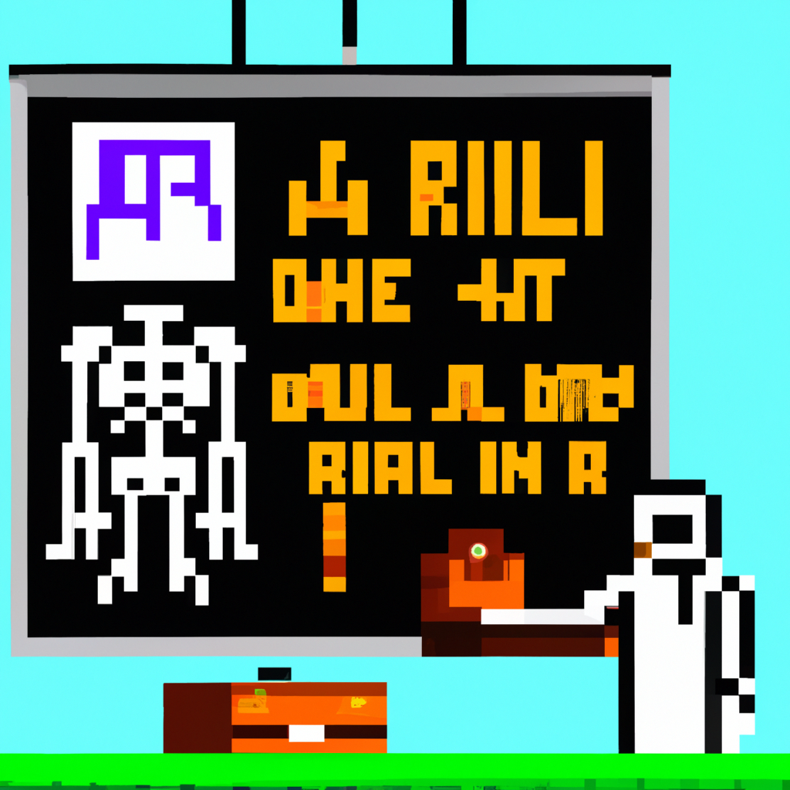

Why AI will never replace the radiologist
Radiology is one of the most important medical specialties and is at the forefront of modern medicine. As technology advances, so does the potential of using machine learning and AI to automate the process of diagnosing medical images. This is an attractive prospect as it could potentially increase the accuracy and speed of diagnosis, while freeing up radiologists to focus on more complex tasks.
However, there are some drawbacks to relying too heavily on AI for radiology. Firstly, AI is only as good as the data it is fed. Radiology relies on years of experience and training to make accurate diagnoses, which AI can¡¦t replicate. Secondly, AI can¡¦t replace the human element of the job. Even if AI is accurate, it still can¡¦t provide the same level of empathy and understanding that a radiologist can.
Finally, there is the potential of bias in AI algorithms. AI algorithms are only as good as the data they are trained on, and if the data is biased, then the algorithm will be too. This is a major concern when it comes to using AI in radiology, as bias in diagnosis can have serious medical implications.
In conclusion, while AI and machine learning can certainly improve the efficiency and accuracy of radiology, they will never be a replacement for the human element of the job. Radiologists are essential to the medical field, and they will always be needed.